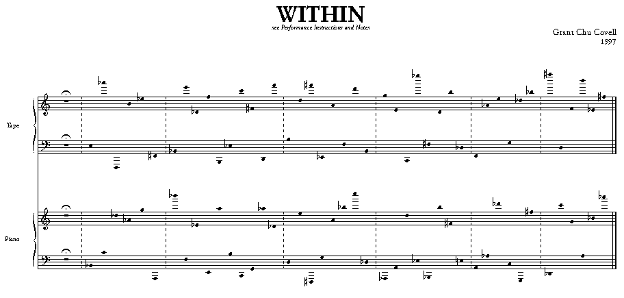

Randomly extracting values from a table
Grant Chu Covell
Instructions Within.orc Within.sco depletion.orc depletion.sco
At the end of 1997, I completed a short composition for piano and tape titled Within. The work's concept is simple: During a performance no pitch is to sound while another is sounding, thus, the pianist is to play within each of the tape's sounds. Given that the piano and the tape only sound 44 pitches each over a 5 minute period, and that each set of 44 pitches is always played in the same order, this seems deceptively simple. But in a concert setting, or even if just reading through at home, a sort of performance anxiety takes over, and this challenge is what I hopes makes Within interesting and engaging.
The printed music (containing a detailed performance note and both sets of 44 pitches) is accompanied by an audio CD containing 17 realizations of the tape part and a diskette containing the Csound score and orchestra files for realizing additional or live tape parts. Every realization of the tape part presents the pitches in the same order, but every realization varies the duration of the pitches, the silence between them and their timbre. However, the durations and timbres are not chosen at random. The durations are selected from a set of 128 unique values and the timbres from a set of 44 unique values, and once a value is selected it is not reused.
Csound is used to create the tape part, and in order to insure that values are chosen from a fixed set and are never reused, I used tables in a method I've called "depletion". Thus, If I have the six member set, {2, 4.7, 8, 14.1, 23, 24}, I want to use these values in a random and non repeating order, thus extracting {8, 24, 4.7, 23, 14.1, 2} at one run and {23, 4.7, 14.1, 8, 2, 24} at another.
I decided to implement depletion by randomly selecting a value from a set, in actuality a table, removing the selected value from the table, and then randomly selecting another value, and so on. The first problem is that once a value is selected it must be marked or changed so that it is not selected again. If the value is swapped for another value, say zero, then code has to be written that will insure that a non-zero value is chosen. This approach is very inefficent as zeros will gradually outnumber non-zero values, and more random tries will be needed to select non-zero values.
A more efficient solution is to select the value from the table, and then create a new table out of the remaining values. Each new table will contain one less member and so will be smaller than the original table by one. The size of the table can be passed to a random number generator to choose the next value, and so on.
For example, the original table contains {2, 4.7, 8, 14.1, 23, 24} with a size of 6. A random number generator comes up with 4, I extract 14.1, and built a new table, {2, 4.7, 8, 23, 24}, with a size of 5. The random number generator comes up with 1, I extract 2 and build a new table, {4.7, 8, 23, 24}, with a size of 4. Etc.
The disadvantage with this approach is that there is a very large memory hit when tables are being continuously created and allocated without being properly cleaned up and destroyed (In actuality, this method became noticeably slower after the second table create and copy. Within has one table that undergoes somewhat nested depletion within a timout structure and the performance degradation was remarkable.).
The solution I finally came up with was to make a note of the position of the selected value, shift all the remaining values one position down and then decrement a counter that stores a pseudo table length.
For example, the original table is {2, 4.7, 8, 14.1, 23, 24} and a pseudo table length variable stores 6. A random number generator comes up with 4, I extract 14.1, and I shift the values that appear after 14.1 (23 and 24) one position to the left, and the table now looks like {2, 4.7, 8, 23, 24, 24}. I decrement the value of the pseudo table length to 5, and pretend the table is actually {2, 4.7, 8, 23, 24}. The random number generator comes up with 1, I extract 2, shift the values after 2 one position to the left, and the table is now {4.7, 8, 23, 24, 24, 24}, with a pseudo size of 4, and I pretend the table is actually {4.7, 8, 23, 24}. As no new tables are created this method is incredibly fast.
Here is a basic example. Depletion is applied to a table containing 10 values which will be used as pitch frequencies. A single instrument will cycle through the table and a timout/reinit structure will be used to make a sound with each selected value.
instr 1 ; < initialize some variables > core: ; < depletion code to go here > timout 0, idur, do reinit core do: ; < opcodes to make sound to go here > rireturn endin
These are the variables to initialize:
idur = p3 iseed = p4 seed = iseed; by specifying a seed in the score the ; randomness can be changed or keep constant iorigtbllen = 10 ; the original table length iftable = 21 ; the ftable containing the table itablelen = iorigtbllen ; table length ( this will change ) iindex = 0 ; index of the element ( this will change )
The timout/reinit structure will actually need to cycle 10 times (the size of iorigtbllen) to deplete all the values in the table, and so the duration of the specific timout statement needs to be 1 / iorigtbllen the length of the total duration of the instrument. So the timout line actually needs to be:
timout 0, idur / iorigtbllen, do ; This is how the elements are randomly selected (Note that older versions ; of Csound may require iunirand instead of unirand.): iindex unirand ( itablelen ) ; unirand returns non integral values iindex = int ( iindex ) ; int provides the integer part ielement table iindex, iftable ; which is used as the table index
And this is where the table values are shifted:
ioldindex = iindex loop: ival table ioldindex + 1, iftable ; get the value of the next position tableiw ival, ioldindex, iftable ; replace the current value with the next value ioldindex = ioldindex + 1 ; increment the index if ioldindex < itablelen goto loop ; continue if there are still values itablelen = itablelen - 1 ; when done, decrement the pseudo table length
ioldindex is a copy of iindex and is made to clarify that ioldindex is for table depletion and iindex is for table reading. Since iindex identifies the selected element, it is only necessary to shift the table values from that index point. Note that older versions of Csound will require itablew instead of tableiw.
This is an arbitrary way to produce sound:
kshape linen 1, 0.1, idur / iorigtbllen, 0.1 ; ; simple envelope to minimize clipping a1 oscili 5000, ielement, 1 ; ; simple oscil using ielement as frequency ; f1 contains a simple sine out a1 * kshape
This is the entire instrument:
instr 1 ;; INITS idur = p3 iseed = p4 seed iseed iorigtbllen = 10 iftable = 21 itablelen = iorigtbllen iindex = 0 core: ;; SELECT VALUE iindex unirand ( itablelen ) iindex = int ( iindex ) ielement table iindex, iftable ;; DEPLETE VALUE FROM TABLE ioldindex = iindex loop: ival table ioldindex + 1, iftable tableiw ival, ioldindex, iftable ioldindex = ioldindex + 1 if ioldindex < itablelen goto loop itablelen = itablelen - 1 ;; FOR TESTING ;; iidxval1 = 0 ;; testtable: ;; ival1 table iidxval1, iftable ;; print iidxval1, ival1, iindex ;; iidxval1 = iidxval1 + 1 ;; if iidxval1 < itablelen goto testtable ;; THE TIMOUT LOOP timout 0, idur / iorigtbllen, do reinit core do: kshape linen 1, 0.1, idur / iorigtbllen, 0.1 a1 oscili 5000, ielement, 1 out a1 * kshape rireturn endin
The commented "For Testing" section includes a rudimentary way to print out the remaining values of the table.
The score contains these lines:
f1 0 8193 10 1 f21 0 17 -2 400 410 420 430 440 450 460 470 480 490 i1 0 20 2
f1 provides a basic sine wave. f21 uses GEN02 to store a user created table (sized to the next larger power of two plus one and made negative to inhibit rescaling). p4 is seeds the random number generator with 2. Attached are depletion.orc and depletion.sco with contain the examples above.
Depletion is easy to comprehend with small tables. It is possible to work depletion on larger tables, such as a sampled sound in a GEN01 table (which results in a frightening aural effect). In such a case the selected values could actually indicate the start of a marker spanning a meaningful length of time, say .05 seconds, thus extracting samples or blocks from a sound source. Pursuing this direction can result in techniques similar to granular synthesis or even algorithmic rearrangement of sampled sounds (processes which I have used to great satisfaction in other works).
Also attached are the score and orchestra files for generating the tape part for Within, the performance note which explains the work as a whole and jpg copy of the printed music (it needs to be printed in landscape orientation). Within.orc adds additional levels of complexity to the concept of depletion: The pitches are taken sequentially from one set of 44 values, and both pitch durations and silences share a second set of 128 values. The pitches are then modified by selecting one of eleven enhancing methods. All of this occurs inside a large timout statement which controls the length of pitches and silences. And there are commented print statements which were useful during debugging.
I encourage not only experimentation with this sort of table manipulation but also a run through of the composition Within itself. It is challenging and rewarding to learn to play within the tape pitches, and even more so against a real-time synthesized tape part.

Grant Chu Covell
Somerville, MA, 1999
gcovell@c-bridge.com